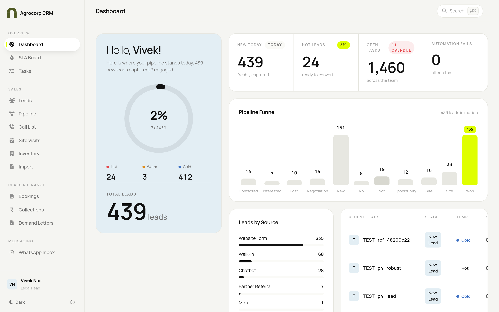
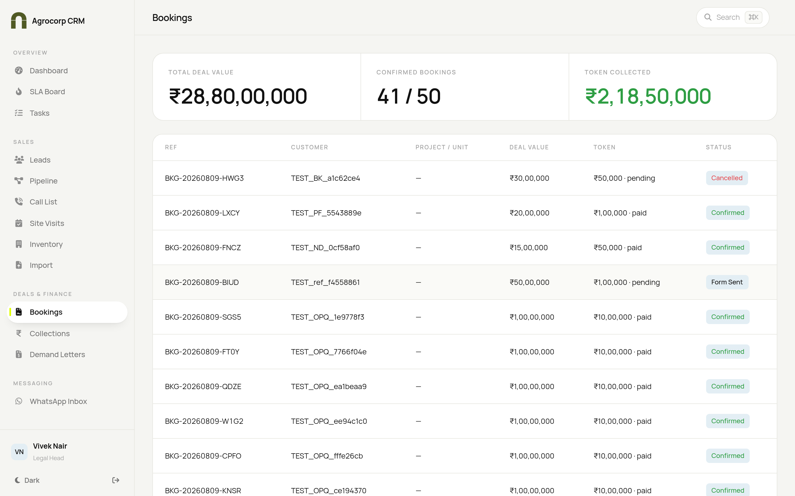
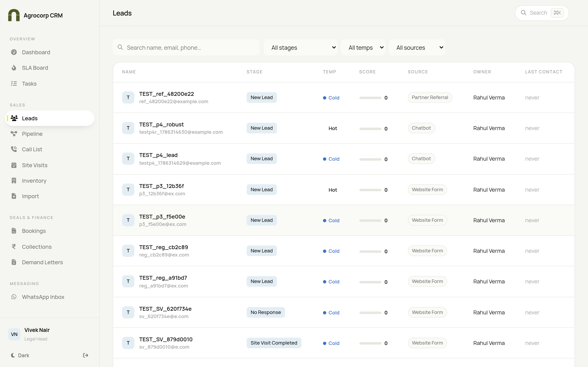

Your playbook for agreements and documents in Agrocorp CRM — working from confirmed bookings through allotment and agreement. For Legal Head and Legal Support.
Legal HeadLegal Support
User Manual · Find your task in the contents and follow the numbered steps.
Agrocorp CRM
Legal Playbook
Who this guide is for
Role
What you do
Access
Legal Head
Owns agreements & legal documents
View and manage legal items; can prepare, edit and finalise agreements
Legal Support
Assists with legal work
View only — can see legal items and leads, but cannot edit or finalise
Difference in one line: the Head prepares and finalises agreements; Support can view and assist but not finalise.
Your home screen

Legal dashboard — the overall picture before you open a specific booking.
Legal work in the CRM is booking-driven: you act on customers once their deal is confirmed and allotment is triggered. You'll mostly use Bookings and the individual customer records.
How your menu looks: your side menu shows Overview, Sales (to view leads), Deals & Finance (Bookings, Collections, Demand Letters) and the WhatsApp Inbox. You work legal actions inside the relevant booking / customer record.
TASK 1 — Find the bookings that are ready for you

Bookings — the confirmed deals that flow into legal work.
Open Deals & Finance → Bookings.
Look for bookings marked Confirmed — these are live deals.
Click a booking to open its full record.
Check whether allotment has been triggered (this happens once the customer has paid 10%).
TASK 2 — Prepare and manage the agreement
Open the confirmed booking (Task 1).
Find the Agreement / Documents section of the record.
Click Prepare agreement to start the agreement for that customer.
Check the customer and unit details are correct before you proceed.
Generate the agreement document.
Move the agreement through its stages (Draft → Sent → Signed) as it progresses.
Send it for signature — e-sign is currently a demo/mock step until an e-sign provider is connected.
Once signed, mark the agreement complete on the record.
Note: electronic signature is mocked today. The agreement lifecycle (prepare, send, mark signed) works, but real e-signature activates only after an e-sign provider is connected in Integrations.
TASK 3 — Review a customer's leads & history

Leads (view) — use this to check a customer's full history and context.
Open Sales → Leads (you have view access).
Search for the customer by name, phone or email.
Open the record to read the full activity trail, notes and documents.
Use this to confirm details before finalising an agreement.
TASK 4 — Coordinate with Accounts on allotment
Allotment is triggered automatically once the customer's collections reach 10%.
Check the booking's collection status under Deals & Finance → Collections.
When allotment is triggered, begin the agreement (Task 2).
Keep the Accounts team informed of the agreement's progress.
Quick answers
Question
Answer
I don't see a separate "Legal" menu
Legal work is done inside each confirmed booking / customer record, not a standalone page.
When can I start an agreement?
Once the booking is confirmed and allotment (10% collection) is triggered.
Is e-signature live?
Not yet — it's a mock step until an e-sign provider is connected.
I can only view, not edit
You're on the Support role — the Legal Head finalises agreements.
 Agrocorp™
Agrocorp™